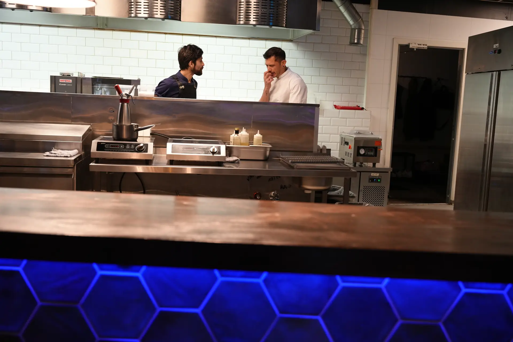
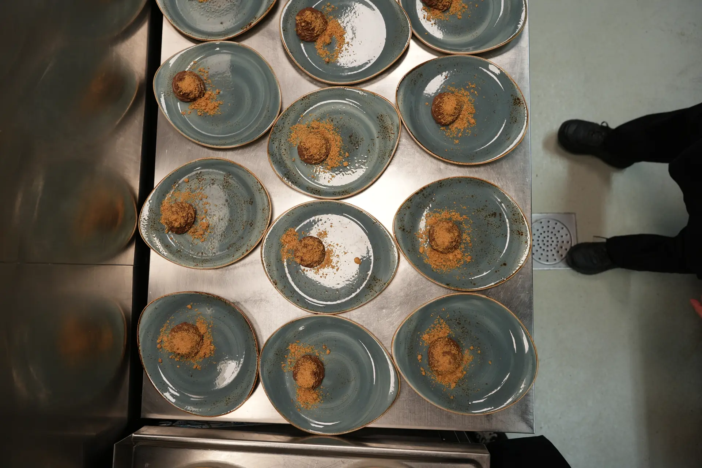
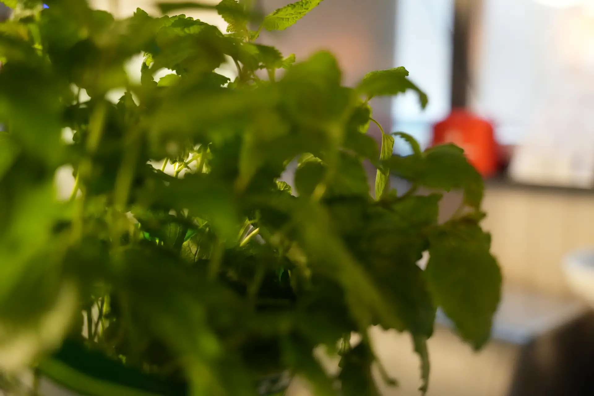
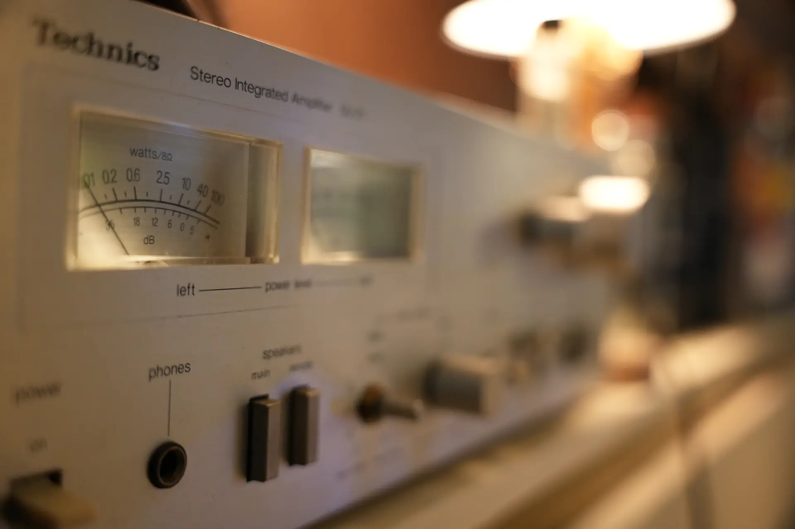
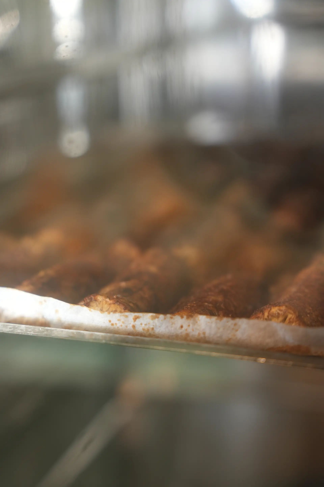
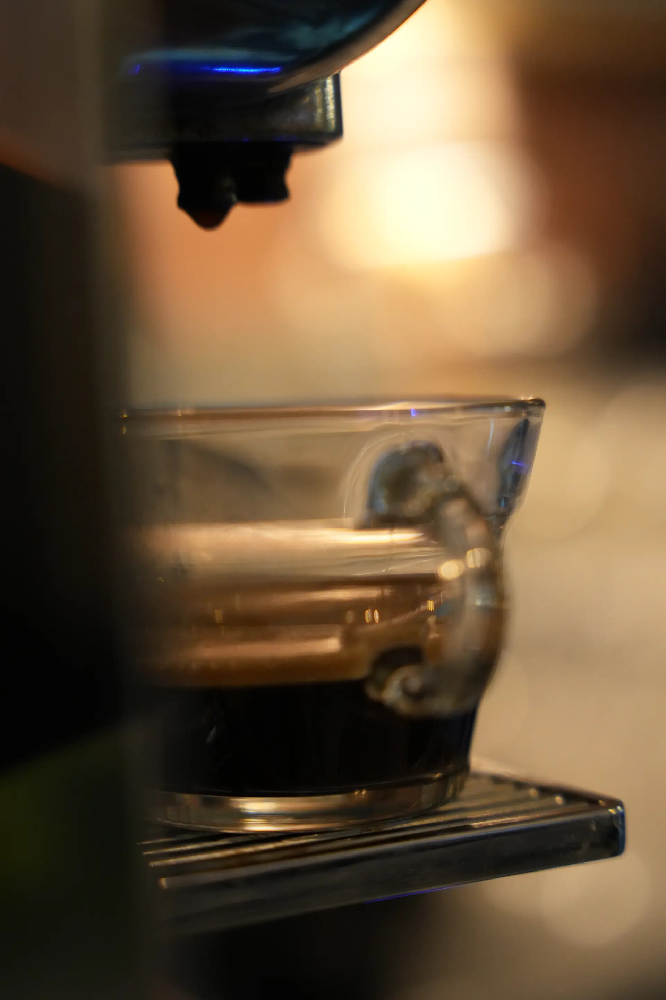
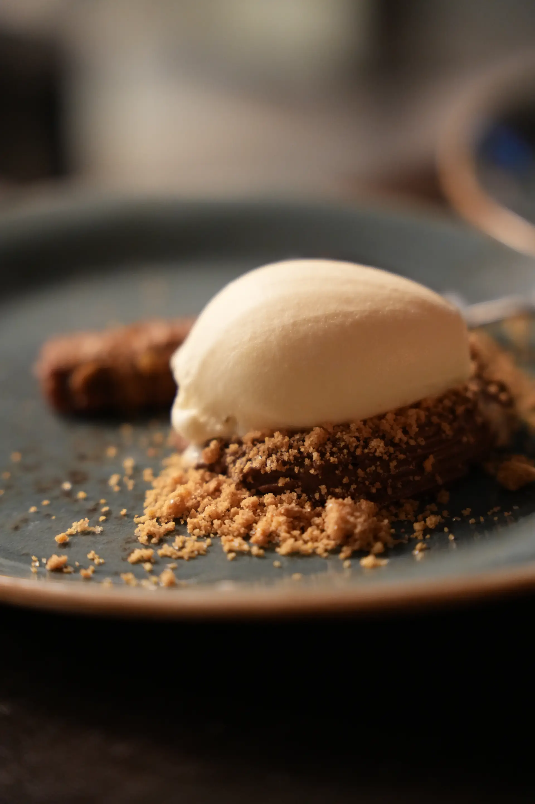
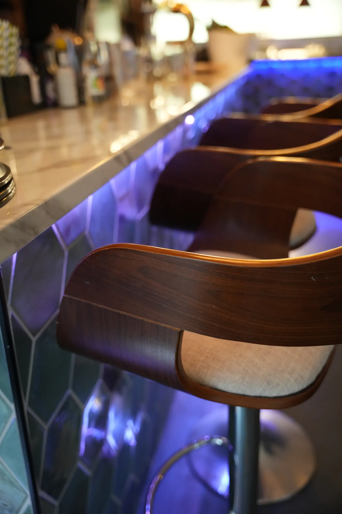
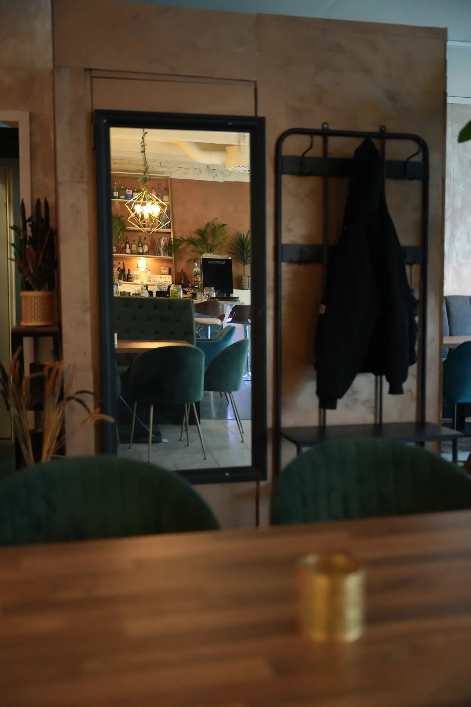

Artichoke Ricotta [L] V250,-
Baked artichoke, citric ricotta cream, green oil









Vår historie
Nabo er et uformelt sted i Bergen, med enkel mat laget for å deles rundt bordet.
Vi lager mat for kvelder som kan deles — uformelt, varmt og med plass til både kjente favoritter og nye oppdagelser.
Åpningstider
Kjøkkenet stenger 30 minutter før stengetid. Reservasjon anbefales.
Bestill bord
Enten det er en hverdagskveld eller en spesiell anledning, dekker vi bord for deg.
Grupper fra 2 til 20 personer.